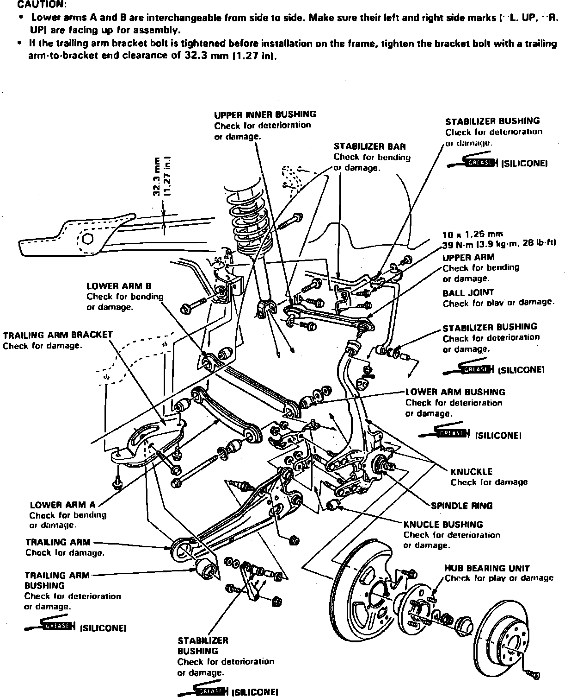
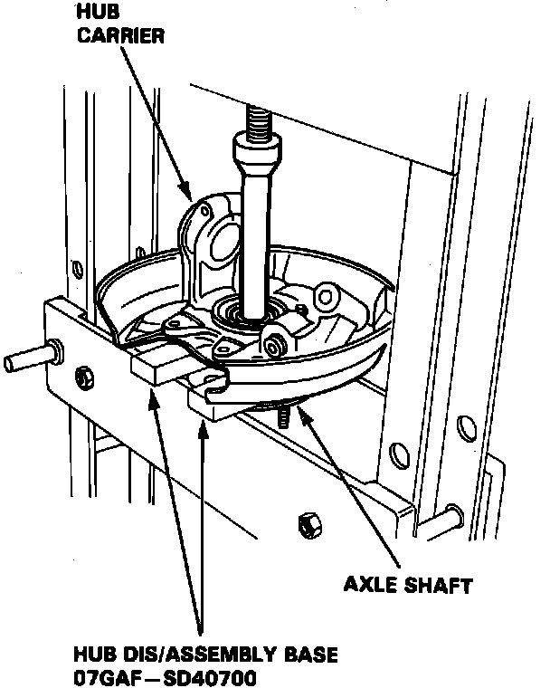
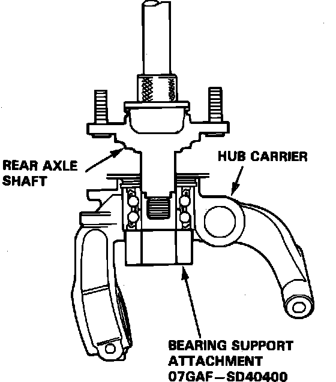

Wheel Hub: Service and Repair
Fig. 6 Exploded View Of Rear Suspension Components:

Fig. 8 Exploded View Of Hub Carrier & Rear Axle Shaft:

Fig. 9 Hub Assembly Removal:

Fig. 10 Hub Assembly Installation:

1. Remove hub carrier assembly as shown in Fig. 6.
2. Remove hub cap and spindle nut, then the splash guard attaching bolts from hub carrier, Fig. 8.
3. Separate hub assembly from hub carrier, Fig. 9.
4. Reverse procedure to install. Press hub assembly into hub carrier as shown, Fig. 10.